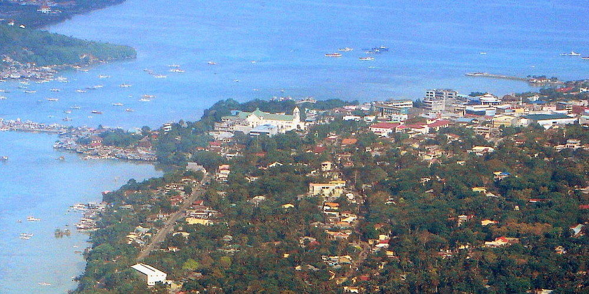

ボホール島（Bohol Island）は、フィリピン中部ビサヤ諸島の島であり、国内10番目の大きさを持つ。島全体が中部ビサヤ地方に属するボホール州である。人口は約114万人、面積は4,117平方キロメートル。主な都市はボホール州州都タグビララン（Tagbilaran）。リゾートとして知られるほか、フィリピンメガネザル（Philippine Tarsier、ターシャ）という世界最小級の霊長類の生息地でもある。
タグビララン
タグビララン（英語: Tagbilaran City、セブアノ語: Dakbayan sa Tagbilaran）は、フィリピン中部ボホール島の西南部にある港湾都市である。ボホール島で一番大きな街で、ボホール州の州都でもある。面積は32.7平方kmで海岸線の長さは13km。バランガイの数は15、人口は2007年現在で92,297人で年々増加している。
パングラオ島
パングラオ島(英語: Panglao Island)はフィリピン中南部ビサヤ諸島、中部ビサヤ地方のボホール海北部に位置する島。
ミンダナオ海
ミンダナオ海（英語: Mindanao Sea）又はボホール海 (Bohol Sea) は、フィリピン中部のビサヤ諸島内のレイテ島や、ボホール島と南部のミンダナオ島との間に広がるフィリピンの海である。 海域は、スリガオ海峡の東にフィリピン海、ネグロス島とサンボアンガ半島間の西にスールー海、北にはカモテス海と繋がっている。大型鯨類の回復が見られており、現代のアジアでは唯一シロナガスクジラが定期的に見られ始めている海域でもある。[1]
- タグビラランには行ったことがありますか？
- あります
- パングラオには行ったことがありますか？
- あります
- ミンダナオ島には行ったことがありますか？
- あります